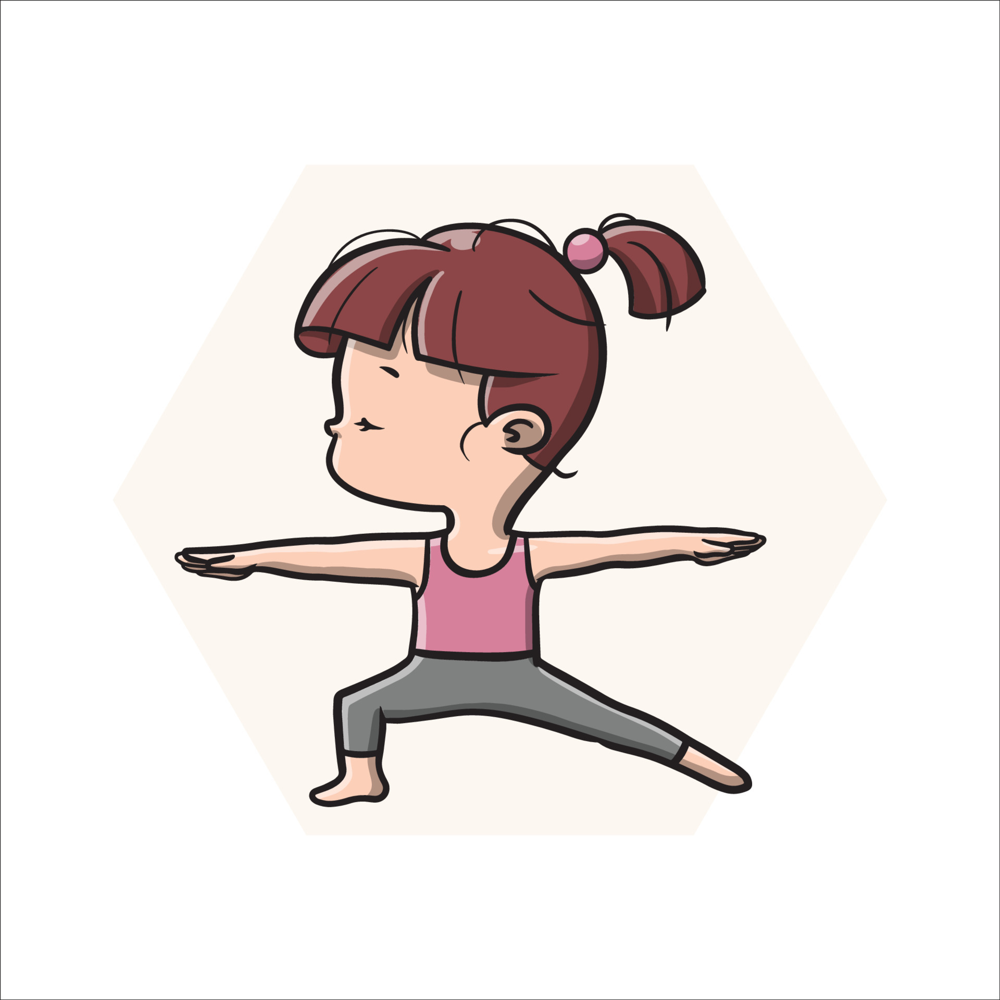
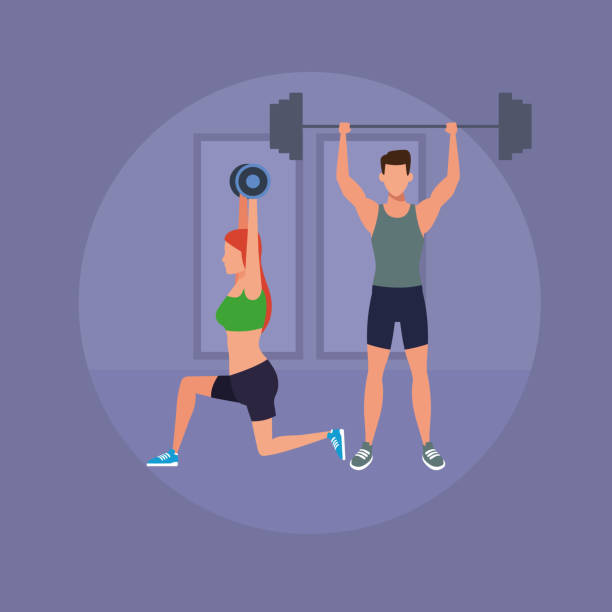
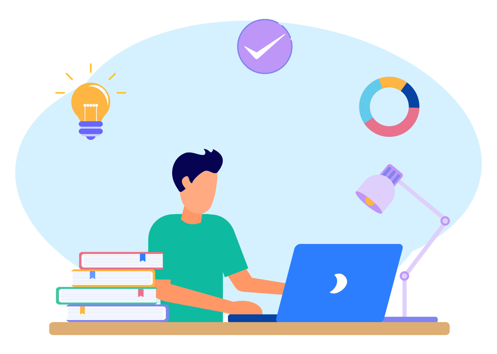

Related post....
How to get back your life
I am struggling with myself, unable to do things that i want...
In this article you will find simple steps to get back your life. I am a 21 year old dude who struggles with this issues but I am never going to give up. After I did some research in which I came to know that there are certain methods or steps you could follow to get back on track.
Steps :
- Increase Focus
- Limit your screen time
- No youtube/adult films
- Read/Exercise
What many people think they are lacking is energy and resources but the main thing they dont realise what they lack is focus.Focus is essential part of achieving our goals.When you actually start to focus you start to enjoy the process of learning. If you cant sit doing one thing for a long time then you actually suck ! One way to increase focus is meditation for 10 minutes everyday.
When it comes to focus our enemy can be our own phone as well. Our phone if used correctly can be a huge weapon of knowledge. Limiting screen time to a hour per day will help us to to increase focus in our life. What we engage ourselves in is what we become .Real world experiences are hell more fun than what we see on social media. It is not necessary to follow those models with whom you have no scope with. You are jut creating a divide within you and the real world by doing so. Look around you there are amazing people with amazing personality. Limiting screen time will help increase mental health and overcoming state of depression and help achieve mindfulness.
Watching youtube other than the things you are interested in creates a diversion with its huge recommendation section. One may loose track of time and the loose focus. Even if you watch self help youtube videos all the time and not act upon it you are doing productive procrastination. You know what to do based on resources you have, however if you use youtube correctly it is huge help. If you choose entertainment over education then you are simply destroying your life. Use imagination !
I am sure everyone knows this step. We have heard this from many people. Mostly in the interviews of successful people and they dont even look fit. But guess what ? it is true. Being healthy doesn't mean you need those lean 6 packs! Many people recommend it because it is a good habbit, if we dont have a healthy body and a healthy mind how are we going to enjoy the rest of our life right ? I dont wanna have my goals achieved and have pain in my joints at the same time. On the other hand reading books is also recommended by all.Since we where kids we are also told to read books. In my case I was told to study to score good in exams however I did not really enjoyed it but i did it anyway, And guess what, I think that was worth it. Reading books does not involve reading books for academic scores. It can involve reading books of authors based on philosophies or our own personal interests. All the movies made are written somewhere first then they are created. Reading and Exercise creates a bond of our mind and body.


